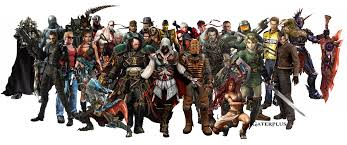

Sony vai lançar 6 jogos para smartphones para acelerar estratégia móvel
Postado em 02 de Abril 2016
Empresa espera repetir o sucesso de 'Pokémon Go';
anuncia chega uma semanas antes de Nintendo lançar 'Super Mario Run' para iPhones.
A sony vai lançar seis jogos para smartphones no próximo ano fiscal,
esperando que suas próprias franquias de games possam replicar o sucesso do rival "Pokémon Go", da Nintendo.
Os títulos vão marcar a chegada de populares franquias de jogos do PlayStation, da Sony,
às plataformas para celulares Android, do Google, e iOS, da Apple.
Uma expansão agressiva da Sony no crescente segmento é vista como necessária para a empresa,
à medida que a divisão de jogos do grupo se torna a maior geradora de lucro da companhia após a reformulação
dos negócios do grupo com produtos eletrônicos de consumo.
A Sony revelou nesta quarta-feira (7) um total de 10 jogos para dispositivos móveis nos quais está trabalhando,
incluindo os que serão lançados no ano fiscal de 2017 que começa em abril.
O anúncio ocorre uma semana antes da data que a Nintendo marcou para lançar a franquia "Super Mario Bros" em iPhones.
A Sony tem se sagrado vencedora na guerra dos consoles, acumulando vendas de 40 milhões de consoles PlayStation 4,
quase o dobro das vendas do Xbox One, da Microsoft.
Além disso, o conglomerado japonês tem enfrentado pressão crescente de dispositivos móveis em países como o Japão,
terceiro maior mercado de videogames do mundo e onde as contas de jogadores em dispositivos móveis
representam mais da metade do faturamento de US$ 12,4 bilhões do setor, segundo a empresa de pesquisa Newzoo.
"Diferente da Nintendo, a Sony tem fracassado consistentemente na promoção de sua propriedade intelectual,
em parte por causa do foco recente da companhia em lucro", disse Hideki Yasuda, analista do Ace Research Institute.
'The Last Guardian' é lançado após 9 anos; game fala sobre 'perdão'
Postado em 12 de Dezembro 2016
Jogo de aventura de Fumito Ueda, criador de 'Shadow of the Colossus',
teve produção conturbada, foi quase cancelado e mudou de plataforma, mas enfim vê a luz do dia no final de 2016.
Videogames também têm a sua dose de drama pessoal, e não estou falando daquela personagem que se sacrifica no final do jogo – ou
do seu arquivo de progresso que, poxa, trava bem antes da luta contra o último chefe.
Nesta terça-feira (6) enfim vê a luz do dia "The Last Guardian", um dos games mais esperados dos últimos anos
e cuja trajetória, assim como "Fallout 4", "Metal Gear Solid V: The Phantom Pain" e "Final Fantasy XV",
foi marcada por especulações, ciclos turbulentos de trabalho e muita, mas muita espera.
E para o japonês Fumito Ueda, diretor e game designer de "The Last Guardian", seu novo jogo fala de uma palavra que olha,
não poderia ser mais apropriada aos fãs depois de tanto tempo: "perdão".
"Há um relacionamento que vai se construindo entre o jogador e Trico e ele nem sempre é bom, despreocupado e alegre.
Perdão é uma característica importante. Mas você realmente precisa sentir por conta própria para entender o sentimento que estou comentando",
diz Ueda em curta entrevista ao G1, por e-mail. Sim Ueda-san,
experimentar um pedacinho dessas sensações é o que muita gente quer há quase uma década.
Mas por que tanta ansiedade? É amigo, a mente do devoto é uma coisa complexa. Passaram-se 7 anos desde que "The Last Guardian"
foi revelado ao mundo, na feira de games E3 2009, e mais de 9 anos desde o início da produção.
E do princípio ele provoca o brilho no olhar dos fãs de PlayStation na esperança de mais um trabalho brilhante de Ueda,
homem por trás de dois dos mais unânimes clássicos modernos: "Ico" (2001) e "Shadow of the Colossus" (2005),
jogos de uma sensibilidade rara até hoje nos videogames.
"The Last Guardian" segue a aventura de um jovem garoto ao lado de Trico,
uma misteriosa criatura que lembra o cruzamento de um grifo com um gatíneo fofo.
A dupla precisa trabalhar junta para coordenar suas ações e solucionar quebra-cabeças em um mundo místico,
delicado e atmosférico – justamente o pedigree que Ueda mostrou manjar bem nos seus outros títulos.
Mas o plano era perfeito demais.O jogo teve problemas de desenvolvimento e, depois de furar sua data inicial de lançamento, em 2010, foi adiado muitas vezes.
O projeto entrou na UTI com a saída de Ueda da Sony, em 2011, onde ele trabalhava internamente em "The Last Guardian" com sua equipe, a Team Ico.
Oficialmente, Ueda continuava no game em um estúdio separado. Mas o que se seguiram foram anos de um limbo angustiante,
um conflito entre fortes rumores de cancelamento e a própria Sony, que afirmava que o game ainda estava de pé,
mas sem mostrar absolutamente nada de novo.
Porém, na conferência da empresa na E3 2015, "The Last Guardian" ressurgiu como uma fênix ao lado do remake de "Final Fantasy VII" e "Shenmue 3".
A plataforma seria o PS4, e não mais o PS3, e a data de lançamento um vago 2016, mas que agora,
depois de um novo adiamento de setembro para dezembro (é preciso honrar as tradições), está mais concreta do que nunca.
O G1 está com o disco de "The Last Guardian" em mãos, senhores. Ele existe.
Ueda diz que está nervoso e animado para o lançamento do jogo, mas que conseguiu se manter em dia com os games mais recentes
"para estudos pessoais e meu crescimento". "Recentemente, tenho passado bastante tempo jogando 'Dragon Quest Builders' e 'Inside'",
ele conta. Também comenta um pouco de suas emoções durante o projeto:
"The Last Guardian' é um game muito único, assim como 'Shadow of the Colossus' e 'Ico'.
Meu maior medo é não saber se ele será aceito tanto por jogadores antigos como novatos.
Mas minha motivação foi criar o game que eu queria jogar e que eu imaginava que os outros também gostariam.
Estou ansioso para receber opiniões".
Modesto ou não, Ueda é responsável por experiências marcantes, usadas como alguns dos melhores exemplos de arte nos videogames.
Teria sido essa a grande dificuldade de "The Last Guardian"? Será que o novo de Ueda é o "Ulisses" japonês?
"Nunca estive consciente ou vi meu trabalho necessariamente como arte. Entretanto, fico muito honrado em você me dizer isso,
obrigado. Há uma porção de coisas que só podem ser feitas usando os videogames como forma de mídia, e quero continuar perseguindo essas coisas".
'The Last of Us Parte II' e novo 'Marvel vs. Capcom' serão lançados para PS4
Postado em 12 de Dezembro 2016
Games foram mostrados pela primeira vez no evento PlayStation Experience, em Anaheim (EUA).
Ellie, protagonista do primeiro 'The Last of Us', aparece mais velha e em busca de vingança.
Os games "The Last of Us Parte II" e "Marvel vs. Capcom Infinite" foram anunciados e mostrados pela primeira vez neste sábado (3),
no evento PlayStation Experience, em Anaheim (EUA).
A revelação da sequência de "The Last of Us" encerrou a apresentação da Sony.
O trailer mostra Ellie, protagonista do primeiro jogo, mais velha e ensanguentada, sentada em uma cama enquanto canta e toca um violão.
Quando um segundo personagem se aproxima (parece ser Joel, o outro protagonista de "The Last of Us"),
Ellie mostra que está em busca de vingança ao dizer que "irá procurar e matar todos eles".
Não há previsão de lançamento para o jogo, que é exclusivo do PS4.
"Marvel vs. Capcom Infinite" é 4º título da série de jogos de luta e, mais uma vez, coloca os super-heróis da editora para
enfrentar alguns dos personagens mais conhecidos do universo dos videogames.
Ao contrário do último jogo, as batalhas acontecem entre duplas, e não trios.
E agora é possível usar as Joias do Infinito, que permeiam o universo da Marvel nos cinemas, para modificar atributos dos lutadores.
"Marvel vs. Capcom Infinite" será lançado em 2017 para PS4, Xbox One e PCs.
Os lutadores já anunciados são Ryu e Mega Man X, do lado da Capcom; e Homem de Ferro e Capitã Marvel, do lado da Marvel.
Durante a apresentação da PlayStation Experience, a Sony também apresentou "Uncharted: The Lost Legacy",
um novo jogo "standalone" que não exige "Uncharted 4: A Thief's End".
O game é estrelado por Chloe Frazer,que aparece em "Uncharted 2", e Nadine Ross, uma das vilãs de "Uncharted 4".
Também foram revelados os primeiros detalhes de "Crash Bandicoot N. Sane Trilogy",
trilogia remasterizada dos games de Crash Bandicoot lançados para o primeiro PlayStation.
De acordo com Dan Tanguay, que cuida do trabalho no estúdio Vicarious Visions, os games não terão apenas seus gráficos melhorados.
As fases e os comandos serão reconstruídos do zero, usando tecnologias modernas.